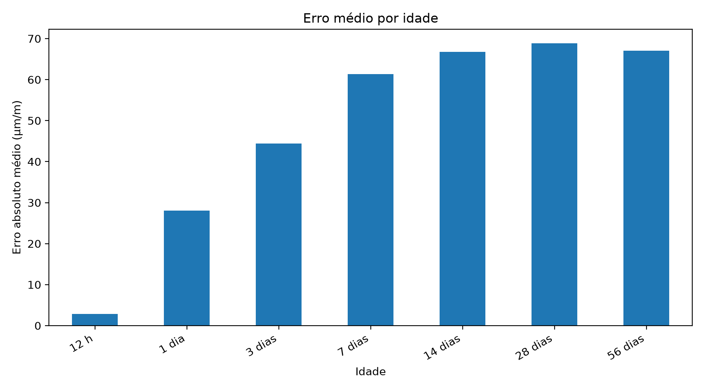

Análise dos erros
Investigar onde o modelo apresenta maior dificuldade por idade, cimento, cura, local, estado, região e faixas quantitativas.
Resultado principal
O erro médio cresce das idades iniciais até cerca de 28 dias e varia de modo importante entre grupos da base.
Decisão metodológica
Usar análise estratificada para discutir domínio de validade e evitar defesa baseada apenas em métricas globais.
Evidência tabular
| idade_label | quantidade | erro_medio | erro_mediano | erro_maximo | variacao_media |
|---|---|---|---|---|---|
| 12 h | 207 | 2.8434460547504026 | 0.0 | 164.805 | 0.0966183574879227 |
| 1 dia | 207 | 28.07190246146768 | 16.281666666666652 | 245.5 | 11.594202898550725 |
| 3 dias | 207 | 44.41208362088797 | 26.503333333333302 | 350.54166666666674 | 19.855072463768117 |
| 7 dias | 207 | 61.31752703013573 | 30.12333333333332 | 480.7416666666667 | 15.748792270531402 |
| 14 dias | 207 | 66.73586149626004 | 39.48166666666666 | 400.69666666666666 | -105.7487922705314 |
| 28 dias | 206 | 68.87014197102789 | 45.775833333333324 | 556.7516666666668 | -224.2233009708738 |
| 56 dias | 206 | 67.0176196255201 | 40.97071428571434 | 525.6399999999999 | -358.59223300970876 |

Rastreabilidade
Este experimento sustenta diretamente a seção 4.6 dos resultados parciais da dissertação.
Relatório detalhado do experimento
Conteúdo incorporado diretamente do relatório Markdown original do Experimento 06, preservando procedimentos, tabelas, resultados, interpretação e conclusão.
1. Caracterização e finalidade
Este experimento analisa os erros do modelo longitudinal. A finalidade é identificar onde o modelo apresenta maior dificuldade: por idade, tipo de cimento, cura, local, estado, região e faixas de variáveis quantitativas.
A análise de erro é essencial porque uma métrica global pode ocultar fragilidades localizadas. Um modelo pode ter bom RMSE médio, mas errar mais em uma idade específica ou em determinado grupo experimental.
2. Procedimento executado
O modelo foi aplicado à base longitudinal e os resíduos foram calculados para cada registro. Em seguida, os erros absolutos foram agrupados por variáveis categóricas e por faixas de variáveis numéricas. Também foram identificados os maiores erros individuais.
3. Tabelas geradas
Tabela 1 — Base completa com erros
A Tabela 1 reúne a base longitudinal com as predições, resíduos e erros absolutos. Ela é a tabela central para auditoria do desempenho do modelo em nível de registro.
Arquivo de origem: experimento_06_analise_erros/resultados/base_com_erros.csv
A tabela completa possui 1447 registros e 21 colunas. Para manter a leitura do relatório viável, apresenta-se abaixo uma visualização parcial, mantendo o arquivo CSV completo na pasta de resultados.
| wb | cement_consumption | water_consumption | dry_d1 | fibra_metalica | macrofibra_pp | microfibra_pp | idade_dias | idade_horas | cement | curing | local_ensaio | estado | regiao | idade_label | epsilon_t | amostra_id | epsilon_previsto | residuo | erro_absoluto | sinal_previsto |
|---|---|---|---|---|---|---|---|---|---|---|---|---|---|---|---|---|---|---|---|---|
| 0.61 | 330 | 201.3 | 10 | 0 | 0 | 0.3 | 0.5 | 12 | CP V ARI | 56 dias ar 50% umidade | Laboratório | SP | Sudeste | 12 h | 0 | 0 | 0.09 | -0.09 | 0.09 | expansao |
| 0.55 | 336 | 184.8 | 0 | 0 | 5.5 | 0.6 | 0.5 | 12 | CP II E 40 | 7 dias úmida / 56 dias ar 50% umidade | Não informado | SP | Sudeste | 12 h | 0 | 138 | 0 | 0 | 0 | estabilidade |
| 0.62 | 325 | 201.5 | 10 | 0 | 0 | 0.3 | 0.5 | 12 | CP V ARI | 7 dias úmida / 56 dias ar 50% umidade | Laboratório | SP | Sudeste | 12 h | 0 | 41 | 0.27 | -0.27 | 0.27 | expansao |
| 0.55 | 336 | 184.8 | 15 | 0 | 0 | 0.6 | 0.5 | 12 | CP II E 40 | 7 dias úmida / 56 dias ar 50% umidade | Não informado | SP | Sudeste | 12 h | 0 | 139 | 0 | 0 | 0 | estabilidade |
| 0.55 | 336 | 184.8 | 0 | 0 | 5.5 | 0.6 | 0.5 | 12 | CP II E 40 | 7 dias úmida / 56 dias ar 50% umidade | Não informado | SP | Sudeste | 12 h | 0 | 140 | 0 | 0 | 0 | estabilidade |
| 0.55 | 336 | 184.8 | 15 | 0 | 0 | 0.6 | 0.5 | 12 | CP II E 40 | 7 dias úmida / 56 dias ar 50% umidade | Não informado | SP | Sudeste | 12 h | 0 | 40 | 0 | 0 | 0 | estabilidade |
| 0.5 | 380 | 190 | 12 | 0 | 5 | 0.6 | 0.5 | 12 | CP V ARI | 7 dias úmida / 56 dias ar 50% umidade | Laboratório | DF | Centro Oeste | 12 h | 0 | 141 | -0.05 | 0.05 | 0.05 | retracao |
| 0.51 | 373 | 190.23 | 10 | 0 | 0 | 0 | 0.5 | 12 | CP V ARI RS | 7 dias úmida / 56 dias ar 50% umidade | Não informado | MG | Sudeste | 12 h | 0 | 137 | 0.19 | -0.19 | 0.19 | expansao |
| 0.51 | 380 | 193.8 | 0 | 0 | 0 | 0.6 | 0.5 | 12 | CP V ARI RS | 7 dias úmida / 56 dias ar 50% umidade | Não informado | RJ | Sudeste | 12 h | 0 | 39 | 0 | 0 | 0 | estabilidade |
| 0.55 | 336 | 184.8 | 15 | 0 | 0 | 0.6 | 0.5 | 12 | CP II E 40 | Não informado | Não informado | SP | Sudeste | 12 h | 0 | 143 | 0 | 0 | 0 | estabilidade |
| 0.55 | 335 | 184.25 | 12.5 | 0 | 5.5 | 0.6 | 0.5 | 12 | CP II E 40 | 7 dias úmida / 56 dias ar 50% umidade | Laboratório | SP | Sudeste | 12 h | 0 | 38 | 0 | 0 | 0 | estabilidade |
| 0.49 | 380 | 186.2 | 0 | 0 | 5.5 | 0.6 | 0.5 | 12 | CP V ARI RS | 7 dias úmida / 56 dias ar 50% umidade | Não informado | CE | Nordeste | 12 h | 0 | 144 | 0 | 0 | 0 | estabilidade |
| 0.528 | 360 | 190.08 | 15 | 0 | 0 | 0.6 | 0.5 | 12 | CP II F 32 RS | 7 dias úmida / 56 dias ar 50% umidade | Não informado | AM | Norte | 12 h | 0 | 145 | 0 | 0 | 0 | estabilidade |
| 0.55 | 340 | 187 | 0 | 0 | 0 | 0.6 | 0.5 | 12 | CP II F 40 | 7 dias úmida / 56 dias ar 50% umidade | Não informado | PR | Sul | 12 h | 0 | 37 | 0 | 0 | 0 | estabilidade |
| 0.55 | 336 | 184.8 | 0 | 0 | 5.5 | 0 | 0.5 | 12 | CP II F 40 | 7 dias úmida / 56 dias ar 50% umidade | Não informado | PR | Sul | 12 h | 0 | 146 | 0 | 0 | 0 | estabilidade |
| 0.52 | 356 | 185.12 | 0 | 0 | 0 | 0.6 | 0.5 | 12 | CP II E 40 | 7 dias úmida / 56 dias ar 50% umidade | Não informado | SP | Sudeste | 12 h | 0 | 142 | 0 | 0 | 0 | estabilidade |
| 0.55 | 327 | 179.85 | 0 | 25 | 0 | 0.6 | 0.5 | 12 | CP II E 40 | 7 dias úmida / 56 dias ar 50% umidade | Não informado | SP | Sudeste | 12 h | 0 | 42 | 0 | 0 | 0 | estabilidade |
| 0.53 | 340 | 180.2 | 0 | 0 | 5.5 | 0.6 | 0.5 | 12 | CP II F 40 | 7 dias úmida / 56 dias ar 50% umidade | Não informado | BA | Nordeste | 12 h | 0 | 136 | 0 | 0 | 0 | estabilidade |
| 0.51 | 380 | 193.8 | 12.5 | 0 | 6 | 0.6 | 0.5 | 12 | CP III RS | 7 dias úmida / 56 dias ar 50% umidade | Não informado | RJ | Sudeste | 12 h | 0 | 43 | 0 | 0 | 0 | estabilidade |
| 0.62 | 311 | 192.82 | 0 | 25 | 0 | 0 | 0.5 | 12 | CP II F 40 | 7 dias úmida / 56 dias ar 50% umidade | Não informado | BA | Nordeste | 12 h | 0 | 126 | 0 | 0 | 0 | estabilidade |
| 0.55 | 336 | 184.8 | 0 | 25 | 0 | 0.6 | 0.5 | 12 | CP V ARI | 7 dias úmida / 56 dias ar 50% umidade | Laboratório | SP | Sudeste | 12 h | 0 | 48 | 0 | 0 | 0 | estabilidade |
| 0.51 | 380 | 193.8 | 12.5 | 0 | 0 | 0.6 | 0.5 | 12 | CP V ARI RS | 7 dias úmida / 56 dias ar 50% umidade | Não informado | RJ | Sudeste | 12 h | 0 | 127 | 0 | 0 | 0 | estabilidade |
| 0.54 | 344 | 185.76 | 0 | 0 | 2.236 | 0 | 0.5 | 12 | CP II E 40 | 7 dias úmida / 56 dias ar 50% umidade | Não informado | SP | Sudeste | 12 h | 0 | 128 | 0 | 0 | 0 | estabilidade |
| 0.55 | 336 | 184.8 | 10 | 25 | 4 | 0.6 | 0.5 | 12 | CP II E 40 | 7 dias úmida / 56 dias ar 50% umidade | Não informado | SP | Sudeste | 12 h | 0 | 47 | 0 | 0 | 0 | estabilidade |
| 0.54 | 341 | 184.14 | 15 | 25 | 0 | 0.6 | 0.5 | 12 | CP II F 40 | 7 dias úmida / 56 dias ar 50% umidade | Laboratório | SP | Sudeste | 12 h | 0 | 129 | 0.265 | -0.265 | 0.265 | expansao |
| 0.6 | 339 | 203.4 | 0 | 25 | 0 | 0.6 | 56 | 1344 | CP II E 40 | 7 dias úmida / 56 dias ar 50% umidade | Laboratório | SP | Sudeste | 56 dias | -430 | 106 | -328.082 | -101.918 | 101.918 | retracao |
| 0.547 | 320 | 175.04 | 0 | 0 | 0 | 0.6 | 56 | 1344 | CP II E 40 | 7 dias úmida / 56 dias ar 50% umidade | Não informado | SP | Sudeste | 56 dias | -460 | 59 | -448.098 | -11.902 | 11.902 | retracao |
| 0.53 | 360 | 190.8 | 0 | 0 | 0 | 0 | 56 | 1344 | CP V ARI | 7 dias úmida / 56 dias ar 50% umidade | Não informado | DF | Centro Oeste | 56 dias | -390 | 168 | -467.728 | 77.728 | 77.728 | retracao |
| 0.55 | 360 | 198 | 0 | 0 | 5 | 0 | 56 | 1344 | CP II E 40 | 7 dias úmida / 56 dias ar 50% umidade | Não informado | SP | Sudeste | 56 dias | -590 | 22 | -431.286 | -158.714 | 158.714 | retracao |
| 0.62 | 325 | 201.5 | 8 | 0 | 0 | 0.3 | 56 | 1344 | CP V ARI | 7 dias úmida / 56 dias ar 50% umidade | Laboratório | SP | Sudeste | 56 dias | -360 | 107 | -378.505 | 18.505 | 18.505 | retracao |
| 0.49 | 380 | 186.2 | 10 | 0 | 0 | 0.6 | 56 | 1344 | CP V ARI | 7 dias úmida / 56 dias ar 50% umidade | Não informado | PI | Nordeste | 56 dias | -320 | 58 | -308.33 | -11.67 | 11.67 | retracao |
| 0.55 | 336 | 184.8 | 15 | 0 | 5.5 | 0.6 | 56 | 1344 | CP II E 40 | 7 dias úmida / 56 dias ar 50% umidade | Não informado | SP | Sudeste | 56 dias | -260 | 167 | -275.257 | 15.257 | 15.257 | retracao |
| 0.52 | 356 | 185.12 | 15 | 0 | 0 | 0.6 | 56 | 1344 | CP II E 40 | 7 dias úmida / 56 dias ar 50% umidade | Não informado | PB | Nordeste | 56 dias | -290 | 108 | -308.993 | 18.993 | 18.993 | retracao |
| 0.52 | 327 | 170.04 | 10 | 0 | 0 | 0 | 56 | 1344 | CP III | 7 dias úmida / 56 dias ar 50% umidade | Laboratório | SP | Sudeste | 56 dias | -350 | 27 | -375.682 | 25.682 | 25.682 | retracao |
| 0.55 | 335 | 184.25 | 12.5 | 0 | 5.5 | 0.6 | 56 | 1344 | CP II E 40 | 7 dias úmida / 56 dias ar 50% umidade | Laboratório | SP | Sudeste | 56 dias | -350 | 38 | -338.569 | -11.431 | 11.431 | retracao |
Observação: o CSV completo correspondente permanece disponível na pasta de resultados do experimento.
Tabela 2 — Erro por idade
A Tabela 2 apresenta o erro médio, mediano e máximo por idade. Ela permite avaliar se o modelo tem maior dificuldade nas idades iniciais, intermediárias ou finais.
Arquivo de origem: experimento_06_analise_erros/resultados/erro_por_idade.csv
| idade_label | quantidade | erro_medio | erro_mediano | erro_maximo | variacao_media |
|---|---|---|---|---|---|
| 12 h | 207 | 2.843 | 0 | 164.805 | 0.097 |
| 1 dia | 207 | 28.072 | 16.282 | 245.5 | 11.594 |
| 3 dias | 207 | 44.412 | 26.503 | 350.542 | 19.855 |
| 7 dias | 207 | 61.318 | 30.123 | 480.742 | 15.749 |
| 14 dias | 207 | 66.736 | 39.482 | 400.697 | -105.749 |
| 28 dias | 206 | 68.87 | 45.776 | 556.752 | -224.223 |
| 56 dias | 206 | 67.018 | 40.971 | 525.64 | -358.592 |
Tabela 3 — Erro por tipo de cimento
A Tabela 3 mostra a distribuição dos erros por tipo de cimento. Ela ajuda a identificar se determinados cimentos estão associados a maior incerteza preditiva.
Arquivo de origem: experimento_06_analise_erros/resultados/erro_por_cimento.csv
| cement | quantidade | erro_medio | erro_mediano | erro_maximo | variacao_media |
|---|---|---|---|---|---|
| CP II F 32 | 21 | 144.389 | 157.758 | 396.637 | 158.571 |
| CP III RS | 98 | 95.898 | 47.564 | 457.045 | -31.224 |
| CP II Z 32 | 35 | 66.829 | 51.392 | 207.08 | 25.429 |
| CP V ARI | 329 | 64.079 | 28.467 | 556.752 | -124.316 |
| CP V ARI RS | 208 | 40.589 | 27.329 | 375.868 | -113.029 |
| CP II F 40 | 154 | 37.49 | 23.521 | 199.225 | -90.974 |
| CP II | 14 | 35.883 | 29.763 | 99.352 | -115 |
| CP II E 40 | 476 | 35.837 | 17.265 | 359.328 | -88.992 |
| CP III | 7 | 30.703 | 25.682 | 62.425 | -91.429 |
| CP II E 40 RS | 14 | 24.762 | 15.104 | 78.173 | -90.714 |
| CP II F 32 RS | 35 | 23.378 | 19.645 | 69.673 | -88.286 |
| Não informado | 28 | 21.443 | 19.945 | 69.563 | -110.357 |
| CP II E | 14 | 18.805 | 8.795 | 88.403 | -95 |
| CP II Z 40 | 14 | 15.798 | 14.131 | 43.635 | -107.857 |
Tabela 4 — Erro por condição de cura
A Tabela 4 apresenta os erros por condição de cura. Essa análise é relevante porque a cura afeta diretamente a evolução da variação dimensional.
Arquivo de origem: experimento_06_analise_erros/resultados/erro_por_cura.csv
| curing | quantidade | erro_medio | erro_mediano | erro_maximo | variacao_media |
|---|---|---|---|---|---|
| 56 dias ar 50% umidade | 7 | 226.577 | 269.341 | 442.057 | -272.857 |
| 7 dias úmida / 56 dias ar 50% umidade | 1370 | 48.254 | 25.077 | 556.752 | -91.372 |
| Não informado | 70 | 34.264 | 14.361 | 284.975 | -72.429 |
Tabela 5 — Erro por local de ensaio
A Tabela 5 compara os erros por local de ensaio. Diferenças entre laboratório, campo e registros não informados podem indicar efeito contextual ou heterogeneidade da base.
Arquivo de origem: experimento_06_analise_erros/resultados/erro_por_local.csv
| local_ensaio | quantidade | erro_medio | erro_mediano | erro_maximo | variacao_media |
|---|---|---|---|---|---|
| Campo | 28 | 251.571 | 266.196 | 556.752 | -326.071 |
| Laboratório | 432 | 51.993 | 27.986 | 442.057 | -72.894 |
| Não informado | 980 | 41.218 | 21.503 | 457.045 | -92.745 |
| Obra | 7 | 27.663 | 28.208 | 48.769 | -92.857 |
Tabela 6 — Erro por estado
A Tabela 6 apresenta o erro por estado. A leitura deve ser cuidadosa, pois estados com poucos registros podem produzir médias instáveis.
Arquivo de origem: experimento_06_analise_erros/resultados/erro_por_estado.csv
| estado | quantidade | erro_medio | erro_mediano | erro_maximo | variacao_media |
|---|---|---|---|---|---|
| SC | 42 | 121.182 | 108.76 | 396.637 | 28.81 |
| RN | 14 | 102.143 | 100.351 | 264.24 | -186.429 |
| ES | 14 | 84.678 | 28.642 | 284.975 | -200 |
| RJ | 182 | 80.783 | 45.664 | 457.045 | -79.011 |
| PR | 28 | 74.824 | 74.482 | 167.292 | -82.143 |
| RS | 35 | 66.829 | 51.392 | 207.08 | 25.429 |
| PE | 35 | 46.68 | 34.842 | 157.48 | -102 |
| MT | 14 | 46.391 | 18.054 | 199.225 | -110.714 |
| SP | 733 | 44.97 | 21.295 | 556.752 | -99.973 |
| MG | 21 | 30.278 | 28.953 | 83.16 | -76.667 |
| BA | 42 | 28.396 | 23.988 | 90.693 | -90.476 |
| PB | 42 | 24.308 | 19.536 | 101.91 | -106.19 |
| PI | 14 | 24.189 | 24.993 | 73.925 | -127.857 |
| AM | 35 | 23.378 | 19.645 | 69.673 | -88.286 |
| AL | 14 | 22.539 | 24.987 | 45.656 | -107.857 |
| CE | 14 | 21.632 | 10.289 | 69.272 | -105 |
| DF | 98 | 21.584 | 17.776 | 77.97 | -95.408 |
| SE | 14 | 20.346 | 9.444 | 69.563 | -112.857 |
| TO | 14 | 18.991 | 16.945 | 47.511 | -92.143 |
| PA | 14 | 18.805 | 8.795 | 88.403 | -95 |
| SP | 28 | 16.116 | 8.342 | 94.455 | -88.929 |
Tabela 7 — Erro por região
A Tabela 7 agrupa os erros por região, permitindo verificar padrões espaciais mais agregados.
Arquivo de origem: experimento_06_analise_erros/resultados/erro_por_regiao.csv
| regiao | quantidade | erro_medio | erro_mediano | erro_maximo | variacao_media |
|---|---|---|---|---|---|
| Sul | 105 | 90.702 | 86.513 | 396.637 | -1.905 |
| Sudeste | 978 | 51.061 | 24.133 | 556.752 | -96.687 |
| Nordeste | 203 | 33.424 | 23.065 | 264.24 | -108.768 |
| Centro Oeste | 112 | 24.684 | 17.94 | 199.225 | -97.321 |
| Norte | 49 | 22.072 | 17.292 | 88.403 | -90.204 |
Tabela 8 — Erro por faixa de relação a/c
A Tabela 8 organiza os erros por faixas da relação água/cimento. Essa variável é tecnicamente relevante para o comportamento dimensional.
Arquivo de origem: experimento_06_analise_erros/resultados/erro_por_faixa_wb.csv
| faixa_wb | quantidade | erro_medio | erro_mediano | erro_maximo | variacao_media |
|---|---|---|---|---|---|
| (0.55, 0.63] | 175 | 87.712 | 32.153 | 556.752 | -138 |
| (0.54, 0.55] | 518 | 45.519 | 21.455 | 457.045 | -72.876 |
| (0.453, 0.51] | 383 | 42.936 | 27.113 | 375.868 | -107.285 |
| (0.51, 0.54] | 371 | 39.677 | 21.654 | 396.637 | -78.625 |
Tabela 9 — Erro por faixa de consumo de cimento
A Tabela 9 avalia se o consumo de cimento está associado a faixas de maior erro preditivo.
Arquivo de origem: experimento_06_analise_erros/resultados/erro_por_faixa_cement_consumption.csv
| faixa_cement_consumption | quantidade | erro_medio | erro_mediano | erro_maximo | variacao_media |
|---|---|---|---|---|---|
| (310.999, 336.0] | 532 | 58.606 | 22.423 | 556.752 | -83.139 |
| (370.0, 424.0] | 315 | 48.019 | 28.953 | 375.868 | -109.016 |
| (343.0, 370.0] | 404 | 40.987 | 24.171 | 396.637 | -87.45 |
| (336.0, 343.0] | 196 | 36.886 | 21.089 | 359.328 | -93.163 |
Tabela 10 — Erro por faixa de consumo de água
A Tabela 10 avalia o erro por consumo de água. Essa leitura é importante porque a água participa diretamente das interações de dosagem e da evolução dimensional.
Arquivo de origem: experimento_06_analise_erros/resultados/erro_por_faixa_water_consumption.csv
| faixa_water_consumption | quantidade | erro_medio | erro_mediano | erro_maximo | variacao_media |
|---|---|---|---|---|---|
| (192.0, 219.6] | 350 | 69.444 | 32.634 | 556.752 | -137.2 |
| (185.76, 192.0] | 357 | 45.3 | 26.013 | 396.637 | -81.176 |
| (169.049, 184.8] | 572 | 43.632 | 21.089 | 457.045 | -68.724 |
| (184.8, 185.76] | 168 | 27.724 | 17.746 | 119.148 | -94.345 |
Tabela 11 — Erro por faixa de DRY D1
A Tabela 11 avalia o erro por faixa de consumo de DRY D1, variável associada ao aditivo compensador de retração.
Arquivo de origem: experimento_06_analise_erros/resultados/erro_por_faixa_dry_d1.csv
| faixa_dry_d1 | quantidade | erro_medio | erro_mediano | erro_maximo | variacao_media |
|---|---|---|---|---|---|
| (12.5, 30.0] | 280 | 54.188 | 19.319 | 457.045 | 11.714 |
| (-0.001, 10.0] | 887 | 50.224 | 25.95 | 556.752 | -141.522 |
| (10.0, 12.5] | 280 | 37.041 | 22.674 | 247.138 | -35.393 |
Tabela 12 — Maiores erros individuais
A Tabela 12 apresenta os maiores erros absolutos. Ela é útil para inspeção qualitativa dos casos mais difíceis e para identificar combinações de variáveis que o modelo ainda não representa adequadamente.
Arquivo de origem: experimento_06_analise_erros/resultados/maiores_erros.csv
| wb | cement_consumption | water_consumption | dry_d1 | fibra_metalica | macrofibra_pp | microfibra_pp | idade_dias | idade_horas | cement | curing | local_ensaio | estado | regiao | idade_label | epsilon_t | amostra_id | epsilon_previsto | residuo | erro_absoluto | sinal_previsto | faixa_dry_d1 | faixa_wb | faixa_water_consumption | faixa_cement_consumption |
|---|---|---|---|---|---|---|---|---|---|---|---|---|---|---|---|---|---|---|---|---|---|---|---|---|
| 0.55 | 332 | 182.6 | 25 | 0 | 0.6 | 3 | 72 | CP III RS | 7 dias úmida / 56 dias ar 50% umidade | Não informado | RJ | Sudeste | 3 dias | 60 | 191 | 410.542 | -350.542 | 350.542 | expansao | (12.5, 30.0] | (0.54, 0.55] | (169.049, 184.8] | (310.999, 336.0] | |
| 0.61 | 330 | 201.3 | 0 | 0.000 | 0 | 0.3 | 7 | 168 | CP V ARI | 7 dias úmida / 56 dias ar 50% umidade | Campo | SP | Sudeste | 7 dias | -450 | 5 | -107.187 | -342.813 | 342.813 | retracao | (-0.001, 10.0] | (0.55, 0.63] | (192.0, 219.6] | (310.999, 336.0] |
| 0.61 | 330 | 201.3 | 8 | 0.000 | 0 | 0.3 | 7 | 168 | CP V ARI | 7 dias úmida / 56 dias ar 50% umidade | Campo | SP | Sudeste | 7 dias | -430 | 155 | 50.742 | -480.742 | 480.742 | expansao | (-0.001, 10.0] | (0.55, 0.63] | (192.0, 219.6] | (310.999, 336.0] |
| 0.55 | 332 | 182.6 | 25 | 0.000 | 0 | 0.6 | 7 | 168 | CP III RS | 7 dias úmida / 56 dias ar 50% umidade | Não informado | RJ | Sudeste | 7 dias | 620 | 192 | 162.955 | 457.045 | 457.045 | expansao | (12.5, 30.0] | (0.54, 0.55] | (169.049, 184.8] | (310.999, 336.0] |
| 0.55 | 332 | 182.6 | 30 | 0.000 | 0 | 0.6 | 7 | 168 | CP III RS | 7 dias úmida / 56 dias ar 50% umidade | Não informado | RJ | Sudeste | 7 dias | 910 | 194 | 461.388 | 448.612 | 448.612 | expansao | (12.5, 30.0] | (0.54, 0.55] | (169.049, 184.8] | (310.999, 336.0] |
| 0.6 | 339 | 203.4 | 0 | 25.000 | 0 | 0.6 | 7 | 168 | CP II E 40 | 7 dias úmida / 56 dias ar 50% umidade | Laboratório | SP | Sudeste | 7 dias | 210 | 201 | -149.328 | 359.328 | 359.328 | retracao | (-0.001, 10.0] | (0.55, 0.63] | (192.0, 219.6] | (336.0, 343.0] |
| 0.61 | 330 | 201.3 | 0 | 0.000 | 0 | 0.3 | 7 | 168 | CP V ARI | 7 dias úmida / 56 dias ar 50% umidade | Campo | SP | Sudeste | 7 dias | 20 | 54 | -340.799 | 360.799 | 360.799 | retracao | (-0.001, 10.0] | (0.55, 0.63] | (192.0, 219.6] | (310.999, 336.0] |
| 0.55 | 332 | 182.6 | 25 | 0 | 0.6 | 7 | 168 | CP III RS | 7 dias úmida / 56 dias ar 50% umidade | Não informado | RJ | Sudeste | 7 dias | 90 | 191 | 453.175 | -363.175 | 363.175 | expansao | (12.5, 30.0] | (0.54, 0.55] | (169.049, 184.8] | (310.999, 336.0] | |
| 0.55 | 332 | 182.6 | 30 | 0.000 | 0 | 0.6 | 14 | 336 | CP III RS | 7 dias úmida / 56 dias ar 50% umidade | Não informado | RJ | Sudeste | 14 dias | 720 | 194 | 337.85 | 382.15 | 382.15 | expansao | (12.5, 30.0] | (0.54, 0.55] | (169.049, 184.8] | (310.999, 336.0] |
| 0.61 | 330 | 201.3 | 0 | 0.000 | 0 | 0.3 | 14 | 336 | CP V ARI | 7 dias úmida / 56 dias ar 50% umidade | Campo | SP | Sudeste | 14 dias | -140 | 54 | -496.874 | 356.874 | 356.874 | retracao | (-0.001, 10.0] | (0.55, 0.63] | (192.0, 219.6] | (310.999, 336.0] |
| 0.55 | 332 | 182.6 | 25 | 0 | 0.6 | 14 | 336 | CP III RS | 7 dias úmida / 56 dias ar 50% umidade | Não informado | RJ | Sudeste | 14 dias | -30 | 191 | 327.46 | -357.46 | 357.46 | expansao | (12.5, 30.0] | (0.54, 0.55] | (169.049, 184.8] | (310.999, 336.0] | |
| 0.61 | 330 | 201.3 | 0 | 0.000 | 0 | 0.3 | 14 | 336 | CP V ARI | 7 dias úmida / 56 dias ar 50% umidade | Campo | SP | Sudeste | 14 dias | -560 | 5 | -184.803 | -375.197 | 375.197 | retracao | (-0.001, 10.0] | (0.55, 0.63] | (192.0, 219.6] | (310.999, 336.0] |
| 0.51 | 380 | 193.8 | 10 | 25.000 | 5.625 | 0.6 | 14 | 336 | CP V ARI RS | 7 dias úmida / 56 dias ar 50% umidade | Não informado | RJ | Sudeste | 14 dias | 300 | 171 | -75.868 | 375.868 | 375.868 | retracao | (-0.001, 10.0] | (0.453, 0.51] | (192.0, 219.6] | (370.0, 424.0] |
| 0.61 | 330 | 201.3 | 0 | 0.000 | 0 | 0.3 | 14 | 336 | CP V ARI | 7 dias úmida / 56 dias ar 50% umidade | Campo | SP | Sudeste | 14 dias | -500 | 8 | -184.803 | -315.197 | 315.197 | retracao | (-0.001, 10.0] | (0.55, 0.63] | (192.0, 219.6] | (310.999, 336.0] |
| 0.61 | 330 | 201.3 | 8 | 0.000 | 0 | 0.3 | 14 | 336 | CP V ARI | 7 dias úmida / 56 dias ar 50% umidade | Campo | SP | Sudeste | 14 dias | -540 | 155 | -139.303 | -400.697 | 400.697 | retracao | (-0.001, 10.0] | (0.55, 0.63] | (192.0, 219.6] | (310.999, 336.0] |
| 0.61 | 330 | 201.3 | 10 | 0.000 | 0 | 0.3 | 14 | 336 | CP V ARI | 56 dias ar 50% umidade | Laboratório | SP | Sudeste | 14 dias | -360 | 0 | -35.316 | -324.684 | 324.684 | retracao | (-0.001, 10.0] | (0.55, 0.63] | (192.0, 219.6] | (310.999, 336.0] |
| 0.61 | 330 | 201.3 | 0 | 0.000 | 0 | 0.3 | 28 | 672 | CP V ARI | 7 dias úmida / 56 dias ar 50% umidade | Campo | SP | Sudeste | 28 dias | -290 | 54 | -690.605 | 400.605 | 400.605 | retracao | (-0.001, 10.0] | (0.55, 0.63] | (192.0, 219.6] | (310.999, 336.0] |
| 0.61 | 330 | 201.3 | 10 | 0.000 | 0 | 0.3 | 28 | 672 | CP V ARI | 56 dias ar 50% umidade | Laboratório | SP | Sudeste | 28 dias | -590 | 0 | -152.409 | -437.591 | 437.591 | retracao | (-0.001, 10.0] | (0.55, 0.63] | (192.0, 219.6] | (310.999, 336.0] |
| 0.61 | 330 | 201.3 | 8 | 0.000 | 0 | 0.3 | 28 | 672 | CP V ARI | 7 dias úmida / 56 dias ar 50% umidade | Campo | SP | Sudeste | 28 dias | -700 | 155 | -236.263 | -463.737 | 463.737 | retracao | (-0.001, 10.0] | (0.55, 0.63] | (192.0, 219.6] | (310.999, 336.0] |
| 0.61 | 330 | 201.3 | 0 | 0.000 | 0 | 0.3 | 28 | 672 | CP V ARI | 7 dias úmida / 56 dias ar 50% umidade | Campo | SP | Sudeste | 28 dias | -870 | 5 | -313.248 | -556.752 | 556.752 | retracao | (-0.001, 10.0] | (0.55, 0.63] | (192.0, 219.6] | (310.999, 336.0] |
| 0.54 | 355 | 191.7 | 15 | 25.000 | 0 | 0.6 | 56 | 1344 | CP II F 32 | 7 dias úmida / 56 dias ar 50% umidade | Laboratório | SC | Sul | 56 dias | 210 | 205 | -186.637 | 396.637 | 396.637 | retracao | (12.5, 30.0] | (0.51, 0.54] | (185.76, 192.0] | (343.0, 370.0] |
| 0.61 | 330 | 201.3 | 0 | 0.000 | 0 | 0.3 | 56 | 1344 | CP V ARI | 7 dias úmida / 56 dias ar 50% umidade | Campo | SP | Sudeste | 56 dias | -470 | 54 | -834.664 | 364.664 | 364.664 | retracao | (-0.001, 10.0] | (0.55, 0.63] | (192.0, 219.6] | (310.999, 336.0] |
| 0.61 | 330 | 201.3 | 10 | 0.000 | 0 | 0.3 | 56 | 1344 | CP V ARI | 56 dias ar 50% umidade | Laboratório | SP | Sudeste | 56 dias | -760 | 0 | -317.943 | -442.057 | 442.057 | retracao | (-0.001, 10.0] | (0.55, 0.63] | (192.0, 219.6] | (310.999, 336.0] |
| 0.61 | 330 | 201.3 | 8 | 0.000 | 0 | 0.3 | 56 | 1344 | CP V ARI | 7 dias úmida / 56 dias ar 50% umidade | Campo | SP | Sudeste | 56 dias | -910 | 155 | -385.138 | -524.862 | 524.862 | retracao | (-0.001, 10.0] | (0.55, 0.63] | (192.0, 219.6] | (310.999, 336.0] |
| 0.61 | 330 | 201.3 | 0 | 0.000 | 0 | 0.3 | 56 | 1344 | CP V ARI | 7 dias úmida / 56 dias ar 50% umidade | Campo | SP | Sudeste | 56 dias | -1000 | 5 | -474.36 | -525.64 | 525.64 | retracao | (-0.001, 10.0] | (0.55, 0.63] | (192.0, 219.6] | (310.999, 336.0] |
4. Figura gerada
Figura 1 — Erro médio por idade
A Figura 1 mostra o erro médio em ordem temporal. Ela ajuda a verificar em quais idades a predição é mais incerta.
5. Interpretação dos resultados
A análise por grupos torna a avaliação do modelo mais transparente. Em vez de depender apenas de métricas globais, o experimento mostra onde o sistema preditivo é mais robusto e onde requer cautela.
6. Conclusão do experimento
O Experimento 6 identifica os grupos e idades em que a predição é mais difícil. Essa informação orienta a interpretação do modelo final e evita uma defesa baseada apenas em métricas agregadas.